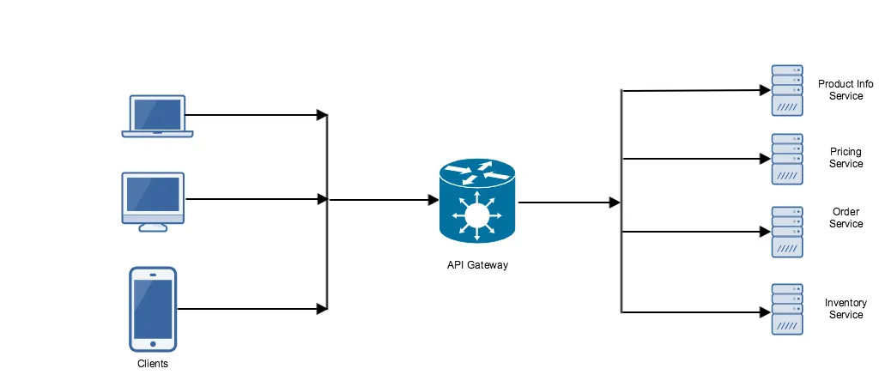

What is API Gateway?
In microservices architecture, there are several services running each designed for a very specific component of the system. When clients (Mobile Apps, Web Apps or Third party applications) communicates directly with these microservices then many problems arise.
-
The granularity of APIs provided by microservices is often different than what the client needs. Microservice API’s are very generic and granular in nature where each returns only a portion of data for functionality. A single operation might require call to multiple services. This can result in multiple round trip network call between client and servers, adding significant latency.
-
Network performance is different for different kind of clients, like the mobile network is slower and high latency. WAN is slower than LAN. Making multiple network calls from clients creates an inconsistent experience.
-
It can result in complex client code. A client needs to keep track of multiple endpoints ( host + port) and handle failures from the services in a resilient way.
-
It also creates a tight coupling between the client and the backend. The client needs to know how individual services are decomposed. It becomes harder to add a new service or refactor existing services.
-
Each client facing services must implement common functionalities like authorization and authentication, SSL, API rate limiting, access control and etc.
-
Services must only use client friendly protocols like HTTP or WebSocket. This limits the choice of communication protocols for services.
There comes an API gateway which can help to address these challenges. It decouples clients from services. An API Gateway sits between clients and services and a single entry point for all clients requests. It takes all requests from clients and then routes them to the appropriate microservice with request routing, composition and protocol translation.

Typically it handles requests by invoking multiple services and aggregating the results and sending it back to the client. API Gateway provides the following benefits:
-
Isolates the clients from how the applications are partitioned into microservices and solve the problem of determining the locations of service instances.
-
API gateway can aggregate multiple individual requests into a single request. This pattern applies when a single operation requires calls to multiple backend services. The client sends one request to the gateway. The gateway dispatches requests to the various backend services, and then aggregates the results and sends them back to the client. This helps to reduce chattiness between the client and the backend.
-
It also improves client performance and user experience by avoiding multiple round trips between client and server. Also, Multiple calls made by API gateway are running in the same network, it will be more performant than it was executed from the client.
-
Simplifies the client by moving the logic for calling multiple services from the client to API Gateway.
-
Allow services to use non web friendly protocol by translating standard web friendly API protocol to whatever protocols are used internally.
-
Gateway can be used to offload the common functionality from individual services.It can be useful to consolidate these functions into one place, rather than making every service responsible for implementing them. This is particularly true for features that requires specialized skills to implement correctly, such as authentication and authorization. functionalities which can be offloaded are :
- SSL termination
- Authentication
- IP whitelisting
- Client rate limiting
- Logging and monitoring
- Response caching
Drawbacks: Link to heading
Increased complexity — The API gateway is yet another moving part that must be developed, deployed and managed.
Increased response time due to additional network hop.